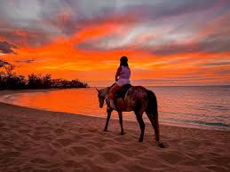
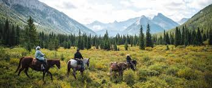
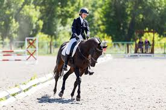
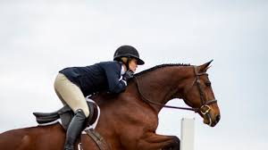

Horse riding is an equstrian sport that goes back many years and was the first source of transportation.Horse riding is basically sitting on a horse controllling all of its movements.
Did you know that when you get on a horse you always get on from the left side. And did you know when horses sleep they sleep standing, so if something were to approach them they would be able to fight back. One last fun fact about my topic is that, did you kow when riding a horse you gain a full body workout for your legs, arms, and back.
Horse riding is a sport that will help you build your body strenth and is great of social interaction.
Some main horse riding disiplines are, western, english, rodeo, and driving skills. The English disciplines are, show jumping, hunter, eventing, and dressage. And the western disciplines are, cutting, western pleasure, reining, and barrel racing.
Many people ride horses because they like animals and want a sport that involves animals or some people do it because it can be competitive, and they like competing against people.
Their are many famous equestrians out there but here are the top three and why they are famous. The first person is Isabell Werth, she lives in germany and holds many Olympic history and medals for her extrem Dressage, next we have Captain Alberto, he holds the world record for jumping the highest in the world, this horse jumped 8 feet which is extreamly high for a horse, and last we have Amberley Snyder, now she dosent hold any world record but has made it to the National Finals Rodeo, not just that but she did it with paralyzed legs after a big car accident and could never walk again.



